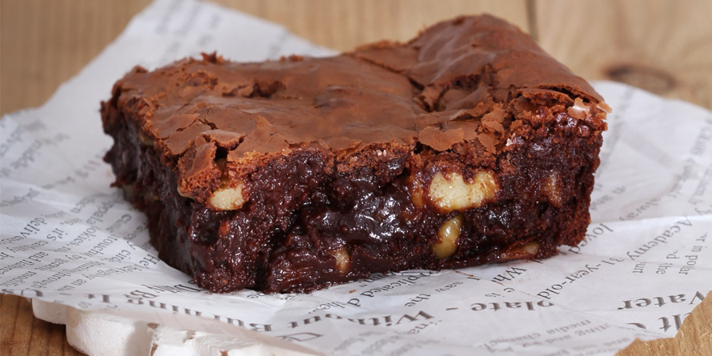

LISTA DE RECETAS
EMPANADA DE POLLO

Ingredientes
Harina para empanar,Pollo desmenuzado,Cebolla picada,Ajo picado,Perejil
picado,Sal y pimienta al gusto,Aceite vegetal para freír
Preparación
- Mezcla el pollo desmenuzado con la cebolla, ajo, perejil, sal y pimienta.
- Envuelve la mezcla en masa de harina para hacer las empanadas.
- Fríe las empanadas en aceite caliente hasta que estén doradas.
TORTILLA ESPAÑOLA

Ingredientes
Patatas cortadas en rodajas,Cebolla picada,Ajo picado,Aceite de
oliva,Huevos,Sal y pimienta al gusto
Preparación
- Sauté la cebolla y el ajo en aceite de oliva hasta que estén transparentes.
- Agrega las patatas cortadas y cocina hasta que estén tiernas.
- Vierte los huevos batidos sobre la mezcla y revuelve suavemente.
- Cocina hasta que los huevos estén firmes y la tortilla se pueda voltear fácilmente.
ENSALADA CESAR

Ingredientes
Lechuga romana,Pollo a la plancha,Anchoas filleted,Ralladuras de
parmesano,Mayonesa casera,Aceitunas negras,Limón
Preparación
- Tuesta el pan para croutons en el horno o en una sartén con un poco de mantequilla.
- En un bol grande, mezcla la mayonesa con jugo de limón y ralladuras de parmesano.
- Empapa la lechuga romana con la salsa de mayonesa.
- Adorna con el pollo a la plancha, anchoas, aceitunas y croutons.
FLAN DE HUEVO

Ingredientes
Huevos,Azúcar,Leche condensada,Esencia de vainilla,Cáscara de huevo rallada
Preparación
- Batir los huevos con azúcar hasta obtener una mezcla espumosa.
- Agregar leche condensada, esencia de vainilla y cáscara de huevo rallada.
- Verter la mezcla en moldes para flan y cocinar en baño María en el horno a baja temperatura durante aproximadamente 30 minutos.
SOPA DE FIDEOS
Ingredientes
Fideos,Caldo de pollo,Verduras (zanahorias, pimientos, cebollas),Especias
(comino, curry),Crema de leche,Queso rallado
Preparación
- Hierve el caldo de pollo con verduras y especias.
- Agrega los fideos y cocina hasta que estén tiernos.
- Antes de servir, añade crema de leche y queso rallado.
- Sirve caliente.
PASTEL DE MANZANA

Ingredientes
Manzanas cortadas en rodajas,Azúcar,Masa de hojaldre,Canela
Preparación
- Espolvorea azúcar y canela sobre las manzanas cortadas.
- Coloca las manzanas en un molde para pastel cubierto con masa de hojaldre.
- Hornea a temperatura media hasta que la masa esté dorada y las manzanas estén tiernas.
CHURRASCOS DE CERDO
Ingredientes
Chuletas de cerdo,Sal y pimienta,Aceite vegetal,Cebolla picada,Tomate pelado
y cortado en trozos,Vinagre balsámico
Preparación
- Asa las chuletas de cerdo en una parrilla caliente hasta que estén bien hechas.
- En una sartén, fríe la cebolla y el tomate con un poco de aceite.
- Vierte vinagre balsámico y deja reducir a fuego medio.
- Sirve las chuletas acompañadas de la salsa de cebolla y tomate.
ARROZ CON POLLO
Ingredientes
Arroz blanco,Pollo a la plancha,Sofrito de tomate y cebolla,Caldo de
pollo,Especias (curry, comino),Zanahoria cortada en cubitos
Preparación
- Sofría el sofrito de tomate y cebolla en aceite.
- Agrega el arroz y cocina hasta que esté transparente.
- Vierte el caldo de pollo caliente y las especias, luego agrega las zanahorias y el pollo a la plancha.
- Cocina a fuego lento hasta que el arroz absorba todo el líquido y esté cocido.
TACOS DE PESCADO

Ingredientes
Filete de pescado,Tortillas de maíz,Cebolla picada,Aguacate cortado en
rodajas,Jitomates cherry,Mayonesa
Preparación
- Asa el filete de pescado en una sartén con un poco de aceite hasta que esté bien cocido.
- Calienta las tortillas de maíz en una sartén o en el microondas.
- Monta los tacos con el pescado, cebolla, aguacate, jitomates cherry y mayonesa.
BROWNIE DE CHOCOLATE

Ingredientes
Chocolate negro fundido,Azúcar,Huevos,Mantequilla derretida,Harina,Levadura
en polvo,Especias (cacao en polvo opcional)
Preparación
- Bate los huevos con azúcar hasta obtener una mezcla espumosa.
- Agrega la mantequilla derretida y el chocolate fundido, mezclando bien.
- Incorpora la harina, levadura en polvo y especias, mezclando suavemente hasta obtener una masa homogénea.
- Coloca la masa en un molde para brownie.
- Vierte la masa en un molde para hornear y hornea a temperatura media hasta que al insertar un palillo salga limpio.